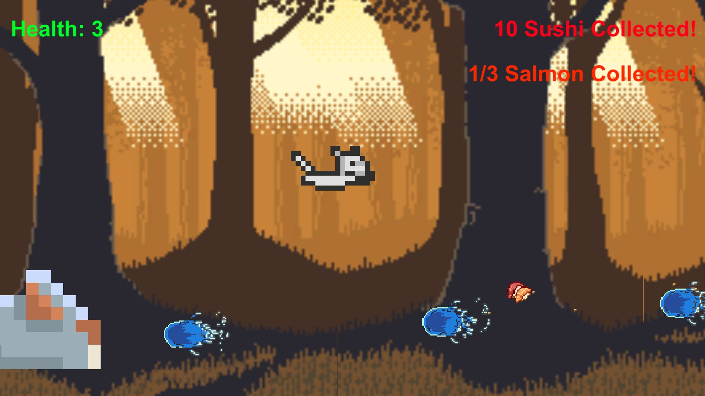

The Cat and the Rat
The Cat and the Rat was my final project for my Game Development 1 course at York University. The game is an endless 2D runner developed in Unity. The game involves a scoring system as well as a health system. The player is able to regain health after collecting a certain amount of salmon, as well as increase their score by collecting sushi all whilst avoiding watery projectiles that appear.
The game allows the player to control the cat by moving along the horizontal axis, as well as by jumping. Upon being damaged, an invincibility window has also been impemented to allow the player to recoup without threat of being immediately hurt again. The game was developed using free assets available online.